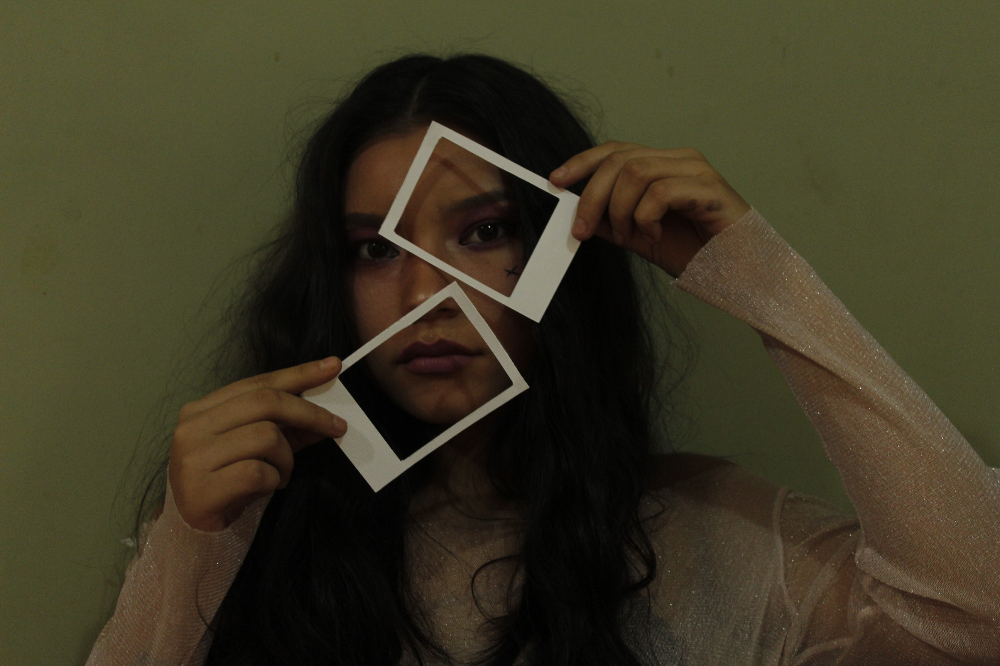
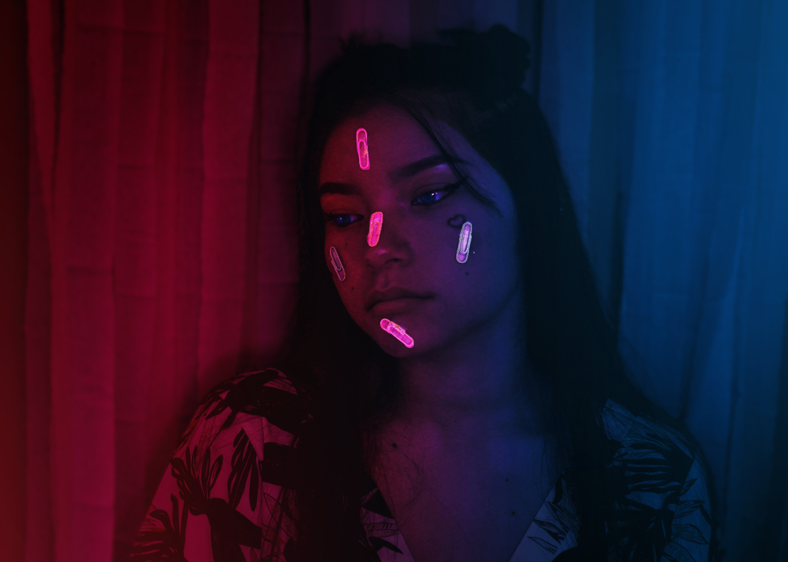

NUESTRO SERVICIO

1FOTOGRAFIA
La fotografía es el arte y la técnica de obtener imágenes duraderas debido a la acción de la luz. Es el proceso de proyectar imágenes y capturarlas, bien por medio del fijado en un medio sensible a la luz o por la conversión en señales electrónicas.
2FOTOGRAFIA DE RETRATO
El retrato fotográfico es un género donde se reúnen toda una serie de iniciativas artísticas que giran en torno a la idea de mostrar las cualidades físicas o morales de las personas que aparecen en las imágenes fotográficas.
3FOTOGRAFIA DE PRODUCTO
Cuando hablamos de fotografía de producto nos referimos a las imágenes que se producen para vender o presentar un objeto determinado.
Portafolio




EXPERTOS EN: :
BUEN TRATO
BUENOS PROYECTOS